5,270 mi²
36° 14′ 31″ N, 116° 49′ 33″ W
In this below-sea-level basin, steady drought and record summer heat make Death Valley a land of extremes. Yet, each extreme has a striking contrast. Towering peaks are frosted with winter snow. Rare rainstorms bring vast fields of wildflowers. Lush oases harbor tiny fish and refuge for wildlife and humans. Despite its morbid name, a great diversity of life survives in Death Valley.
Est. October
31, 1994
California,
USA
Hiking
From deep canyons to salt flats, sand dunes, and desert peaks, Death Valley is a hiker's paradise.
Backpacking
Cross country adventures for a true wilderness experience.
Camping
Death Valley has a variety of campgrounds from primitive to full hook-up.
Mountain Biking
Hundreds of miles of of dirt roads provide awesome mountain biking. Paved roads have narrow shoulders.
Backcountry Roads
Death Valley has hundreds of miles of backcountry roads. From two-tracks to graded surfaces, there's something for all skill levels.
Source–
Wikipedia
nps.gov